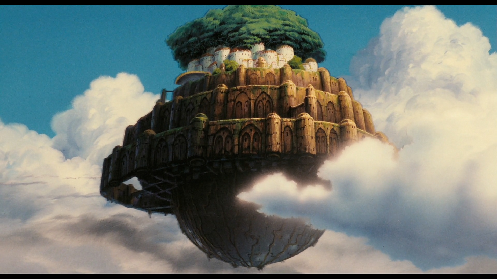
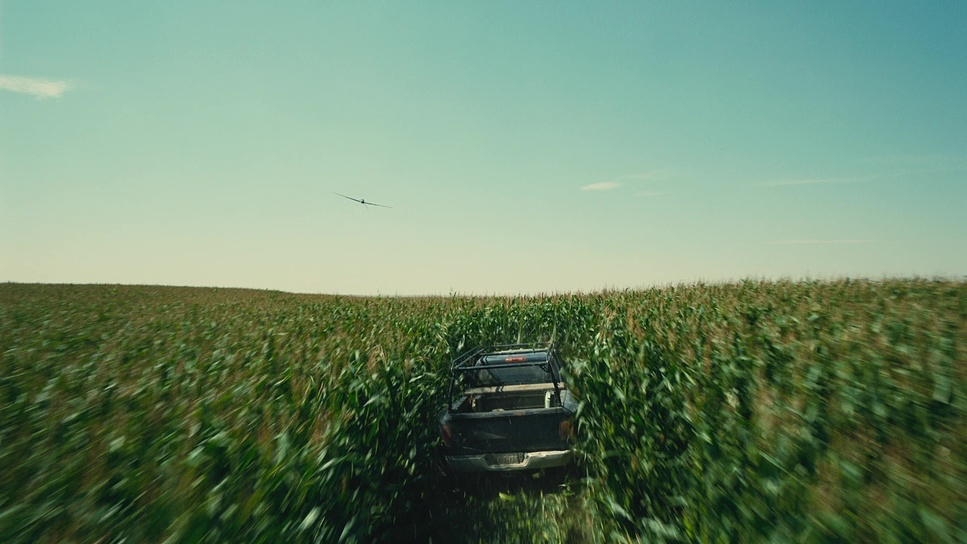
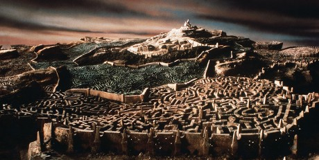
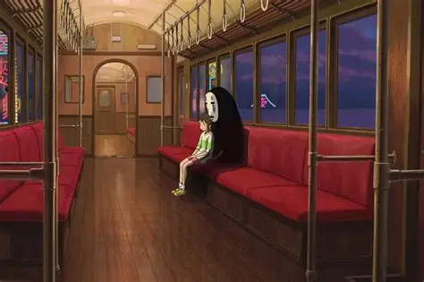

I have seen countless movies in my life, but one number that can be counted to is 5. So here are my personal top 5 favorite movies.
It's Because of the work scenes singlehandedly. (Andreas)

Music and visuals and characters

The sceince, mystery, music, and acting

Puppet work and sountrack

I don't even know why, just watch it bruh
Home